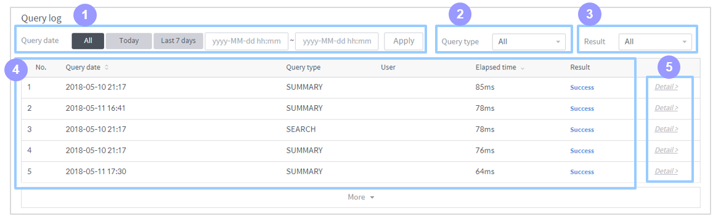

Data source details¶
Click a data source listed in the data source management home to view various attributes of that data source. The following subsections describe each area of the data source details. Note that a data source represents a Druid database table stored in Metatron and necessarily includes a timestamp column as a time-series table.

Common top area¶
Name: Name of the data source. Click on it if you want modify it.
Description: Description of the data source. Click on it if you want modify it.
Last update: Shows who and when last updated the data source.
Delete: Click this icon to display a menu that allows you to delete the data source.
Tab selection: Each tab displays a specific set of attributes of the data source. Depending upon the type of data source, not all of the three tabs may be displayed. For details on each tab, refer to the relevant subsection below.
Data information area¶
This area displays basic information of the data source.

Data type: Type of the imported source data from which the data source has been created.
Status: Displays the availability of the data source.
Size: Displays the size of the data source.
Duration: Displays the time range of the timestamps included in the data source.
Timestamp setting: Displays the granularities defined when the data source was created.
Query Granularity: Defines the minimum time period by which data is queried. This ensures faster returns by aggregating data per granularity interval.
Segment Granularity: In Druid, a data source is stored into multiple segments to be processed over multiple nodes in the distributed cluster environment. This granularity setting defines the time intervals into which the data source is partitioned.
Histogram: A graph displaying the size of the data stored within each time interval in Kbytes. This histogram is can be rendered because the Druid engine timestamps every table record.
Publish area
In this area, you can check and set which workspaces have access to the data source.

Allow all workspaces to use this data source: Select this check box to make the data source available in all workspaces.
Edit: Used to allow specific workspaces to access the data source. This button will disappear if the data source is set as open data.
Number of shared workspaces: Displays how many workspaces have access to the data source.
Change data schema¶
The top section of the column details tab provides a user interface to filter columns by the criteria you define. Columns that meet the criteria are displayed on the left. You can also edit column settings.
Column view/settings

Search data: Searches for columns by the column name you type in.
Role: Displays all, dimension, or measure columns.
Type: Displays the columns whose data type is selected.
View all: Clears all filter settings in the Search data, Role, and Type options and returns to view all columns.
Configure schema: Click this button to prompt a window to edit the current column settings.
Column list: Lists table columns.
Column information: Displays attributes of the selected column.
Column settings: Displays the metadata of the selected column.
Statistics: Displays the row count and other statistical values of the selected column.
Configure the schema
Provides a user interface for editing the name and type of columns.

Role: Displays whether the column is a dimension or measure.
Name: Displays the actual name of the column.
Logical name: Allows you to edit the logical name of the column displayed in the system.
Type: Allows you to edit the logical type (character/integer/date, etc.) of the column.
Format: Allows you to edit the display format of the column in the case of the column being a timestamp type.
Description: Allows you to add a detailed description of the column.
Analyze data statistics¶
The Monitoring tab reports the usage of the data source.
Change of transaction
Displays the trend of data source transactions over time.

Changes of data size
Displays the trend of the data source size over time.

Query distribution (during last one week)

Query distribution by user (during last one week): Displays a pie chart of query percentages by user for the past week.
Query distribution by elapsed time (during last one week): Displays a pie chart of query percentages by execution time for the past week.
Query log
Used to view a detailed history of each performed query.

Date: Set a time range to display only those queries that were last executed within this time range.
Query type: Filters the performed queries by type.
Status: Displays all, succeeded, or failed queries.
Query list: Lists queries filtered by specified criteria.
Detail: Click on it to view the query statement.